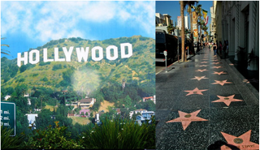
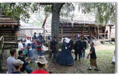

FMB Tour
FMB offers varieties of themed tours for tourists who want to get more insight of the exciting movie industry and fascinating fictional world.
New route :
Hollywood All Star tour

Exploring Hollywood in the way no one ever did. We will take you to scenes where classic movies were made, and introduce you to your favorite stars, maybe, as your wish, you will be invited to join his parties.
NASA : Project Mars
Remember the movie < The Martian > ? Now you can be one as well. FMB can take to one step closer to Mars through the help from FMB’s beloved friend -- NASA, to make your dream come true, go relive in all the behind scenes. Book now !

Be in a movie
Don’t want just wanting the movie ? How about be in the movie or shoot a movie with the professionals ? FMB has a varieties of movies, choose a type you like, we can find a perfect role for you. The ultimate movie experiences, a Seats-limited exclusive activity we are offering.